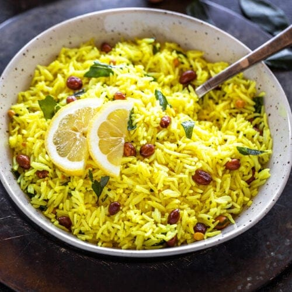

Lemon Rice
⭐⭐⭐⭐⭐ 4.8 Rating | ⏱ 25 Minutes | 🍽 4 Servings
Category
Lunch
Difficulty
Easy
Calories
310 kcal
Cooking Style
South Indian
📋 Ingredients
- 3 cups Cooked Rice
- 2 Lemons (Juice)
- 2 tbsp Oil
- 1 tsp Mustard Seeds
- 1 tsp Urad Dal
- 1 tsp Chana Dal
- 2 Dry Red Chillies
- 2 Green Chillies
- 10 Curry Leaves
- ¼ tsp Turmeric Powder
- 2 tbsp Roasted Peanuts
- 1 tbsp Cashew Nuts (Optional)
- Salt to Taste
- Fresh Coriander Leaves
🍳 Required Utensils
- Cooking Pan
- Mixing Bowl
- Knife
- Cutting Board
- Spatula
- Serving Bowl
📖 Introduction
Lemon Rice is a traditional South Indian dish prepared with cooked rice, fresh lemon juice, peanuts, and aromatic spices. It is light, flavorful, and perfect for lunch, travel, or lunch boxes.
🔬 Principle
Fresh lemon juice gives the rice a tangy flavour, while tempering with mustard seeds, curry leaves, dals, and peanuts adds aroma, crunch, and taste.
👨🍳 Procedure
- Cook the rice and allow it to cool.
- Heat oil in a pan.
- Add mustard seeds and allow them to crackle.
- Add urad dal and chana dal.
- Add peanuts and fry until golden.
- Add dry red chillies, green chillies, and curry leaves.
- Add turmeric powder and stir well.
- Add cooked rice and salt.
- Mix gently until the rice is coated evenly.
- Turn off the flame.
- Add fresh lemon juice.
- Mix gently once again.
- Garnish with coriander leaves.
- Serve hot or at room temperature.
⚠ Precautions
- Use cooled rice for best texture.
- Add lemon juice after switching off the flame.
- Do not overcook the rice.
- Adjust chillies according to taste.
- Mix gently to avoid breaking the rice.
💡 Chef Tips
- Add grated coconut for extra flavour.
- Use fresh lemons for the best taste.
- Roast peanuts until crispy.
- Serve with pickle and papad.
- Add cashews for a richer taste.
🥗 Nutrition Facts
| Nutrient | Amount |
|---|---|
| Calories | 310 kcal |
| Protein | 6 g |
| Carbohydrates | 48 g |
| Fat | 10 g |
| Fiber | 3 g |
🍽 Serving Suggestions
- Serve with curd.
- Enjoy with pickle.
- Serve with papad.
- Pair with potato fry.
- Best for lunch boxes and travel meals.
🌿 Health Benefits
- Lemon is rich in Vitamin C.
- Peanuts provide healthy fats and protein.
- Rice supplies carbohydrates for energy.
- Easy to digest.
- Light and refreshing meal.
✅ Result
The prepared Lemon Rice should have fluffy yellow rice coated evenly with fresh lemon juice, crunchy peanuts, aromatic curry leaves, and mild spices. It should be tangy, flavorful, and perfect for serving as a wholesome South Indian meal.
🎥 Watch Recipe Video
Learn the complete recipe by watching the step-by-step video.
▶ Watch on YouTube